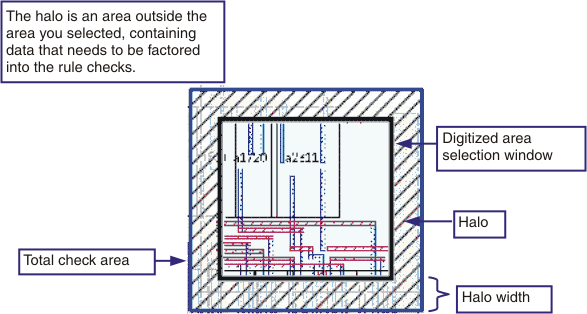

LFDregion
{-region region_layer_name | ‑blockingLayer block_layer_name}
[-layer input_layer_name]
-halo size
Limits Calibre LFD checking in batch mode to specified regions within the layout. These regions apply to all PV-bands created, regardless of how many times you issue the LFD::PVband command.
When used, this command must be placed before the first call to the LFD::PVband command.
LFD::LFDregion cannot be defined in the PDK.
Required keyword and argument specifying a layer that identifies the regions to check. This layer can be either an original layer or a derived layer. It must contain one or more polygons that enclose the portions of the layout to be evaluated with Calibre LFD.
Required keyword and argument specifying the area where you do not want Calibre LFD simulation or checking to run. No error markers are showed in this area.
If you do not define a -region, you must define a -blockingLayer. The region where Calibre LFD runs is the extent of the layer rather than the blocking layer.
Optional keyword and argument associating the Calibre LFD region with a specific target layer. If not specified, the region applies to all layers. When using the -layer option, you can include the LFDregion command multiple times, defining a different region for each target layer. Otherwise, the command can be issued at most one time.
Required keyword and argument defining the size of a halo, specified in microns. The halo is an area outside the area you selected, containing data that is factored into the calculations used to generate the PV-bands. The actual PV-bands extend only to the boundary of the region.
